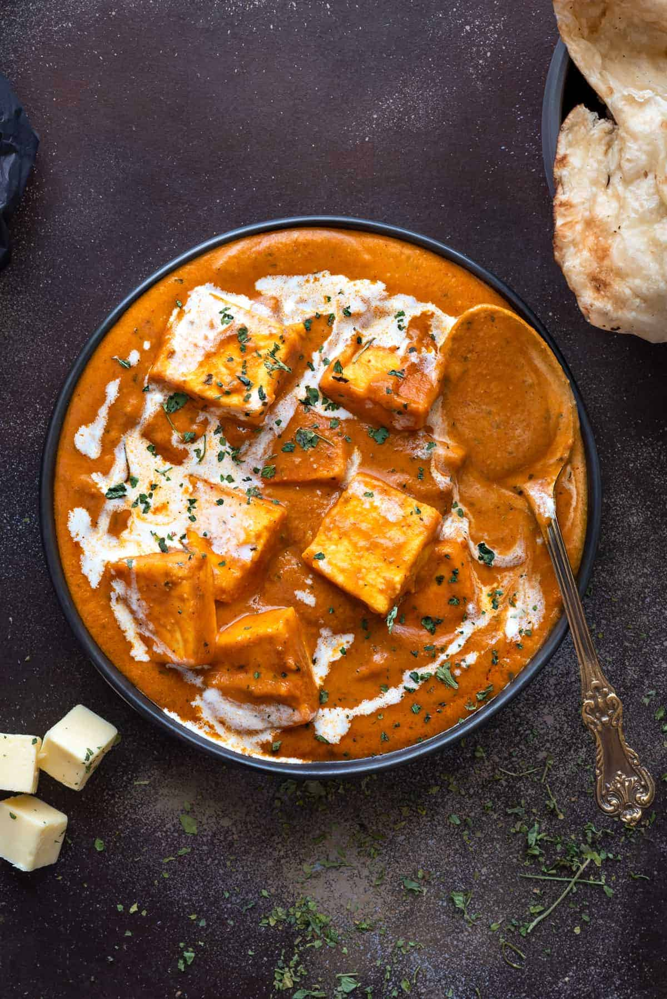

Paneer Butter Masala

Paneer Butter masala is one of the most loved paneer recipe by readers. A mildly spiced restaurant style dish of paneer cooked in tomatoes cashews butter and cream. It's different and super tasty recipe than the other butter paneer recipes out there, so make it now and enjoy!
Ingredients
- Dairy - Paneer, butter and cream
- Cashew nuts
- Fresh spices - Tomato, green chilies, ginger and garlic.
- Whole Spices - Caraway seeds (Shajeera), cinnamon sticks, bay leaves.
- Spice powders - Turmeric powder, red chili powder, coriander powder and garam masala powder./li>
- Other ingredients - Kasuri Methi, Salt, Sugar.
How to Make!
- In a pan, melt 1 tablespoon of butter. Add caraway seeds (shajeera) and fry for few seconds. Add green chilies, ginger and garlic, fry for few seconds.
- Add cashew nuts and fry for 30 seconds. Then, add tomatoes and sauté on for a minute.
- Cook until tomatoes are soft. Take it off the heat and cool completely. Grind this tomato cashew masala to a very fine paste.
- Heat 3 tablespoons of butter in a pan or kadhai. Add bay leaf and cinnamon stick, fry for few seconds.
- Lower the heat and add turmeric powder, coriander powder and red chili powder. Add kasuri methi and mix.
- Add ground tomato cashew masala paste, saute on high for a minute. Stir in between. Cook for 2-3 minutes or until masala starts releasing the oil.
- Add ⅓ cup of water, salt and then bring it to a boil. Do not add too much water at a time.
- Add cream and mix, cook for 1 -2 minutes only. Add paneer, garam masala powder and sugar. Mix well. Cook for only a minute.
- Proceed with the step of giving charcoal dhungar for the smoky flavour restaurant or Dhaba like flavour.